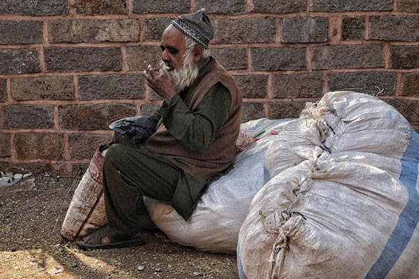

English
English Kannada
KannadaCommunity Kitchens - A Case study in Class Mergers
India is a country synonymous with various caste equations, stretching across all religions. The founding fathers of India had a dream to build a casteless society , and no one epitomises the dream of such a unified India than the father of the Indian constitution Dr. B R Ambedkar.
Political parties are aware of the ground realities, and come election time, do not touch the caste equations, rather preferring to keep things the way they are, so as to garner votes on the basis of caste loyalties.
Elected officials on the other hand, have the onerous task of filtering out caste from the equation when it comes to the delivery of government subsidies and other forms of assistance. When the focus of a government is on delivery of services to the poorest sections of society, caste equations fall by the wayside, as the government authorities alone are able to create a legitimate and lasting narrative where castes can merge into a more homogeneous Indian bourgeoisie, which in many ways would be the fulfillment of Dr. Ambedkars dream of a casteless society.
Discussions about caste are analogous to the subject of socio-economic classes in Indian demographic context with certain classes owing to years of neglect, illiteracy and oppression, relegated to the lower strata of the society, failing to grapple with their problems on their own, almost fighting a losing battle , relegated to taking up the jobs that ensure their survival , with no concept of ambition , the only futuristic goal being an education for their wards.
Considering that the elimination of caste barriers is a problem that successive governments have tried to handle with moderate success, the question remains what further initiatives can be taken, or how must the existing schemes and programmes be strengthened to handle this divisive issue.
My personal opinion is that community kitchens and shelters for the homeless are two such initiatives which can give a boost to the local economy, by creating an ecosystem of contributors , service providers and beneficiaries, thereby erasing many boundaries that caste have created by a merger of the classes to which the above actors belong.
A socio-economic narrative centered around community kitchens and homeless shelters , driven by the government of the day, can entreat richer sections of society to contribute their might in exchange for tax exemptions and provide much needed employment to the unemployed, also resulting in the upkeep of the homeless and feeding the poor who cannot afford two square meals a day.